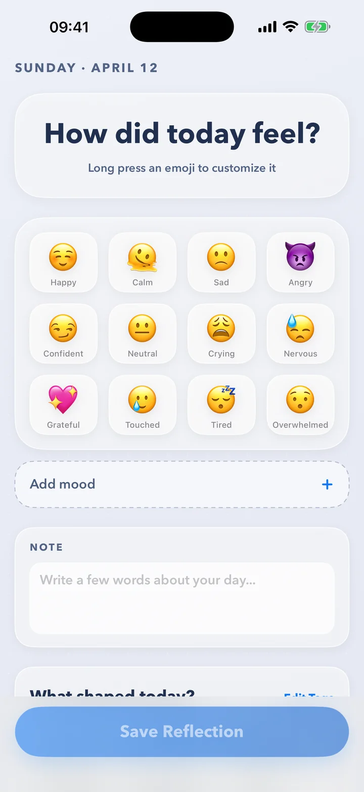
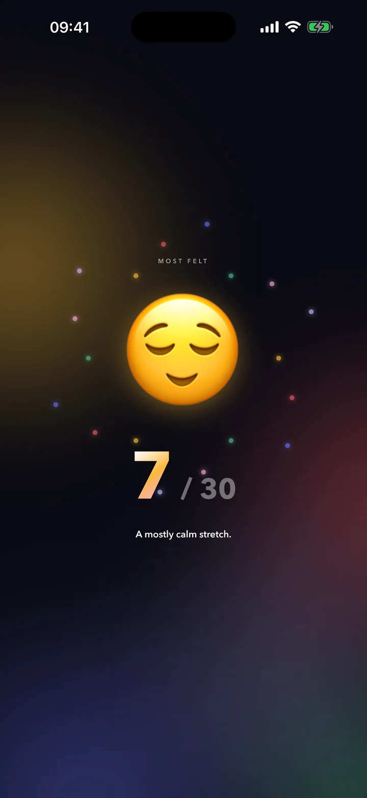
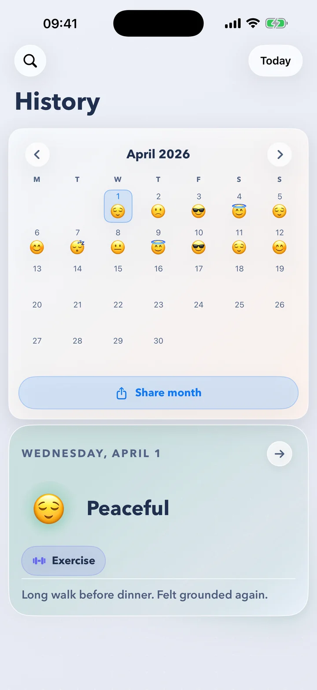
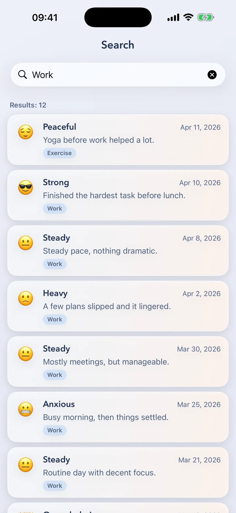
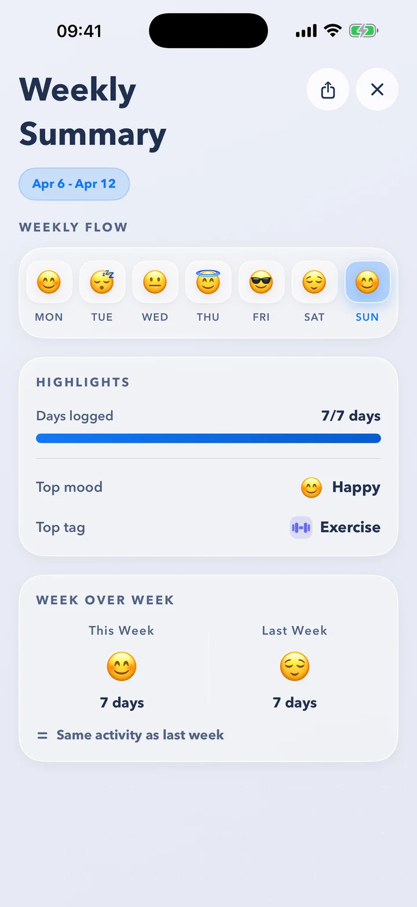
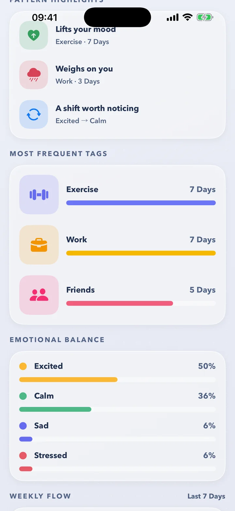
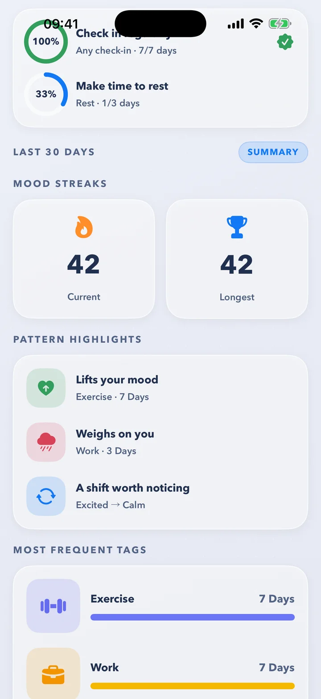

One emoji.
Every day.
Emojily is the mood journal that takes one tap. Pick the face that fits today, add a tag or a few words if you like — and watch your month fill in.
- Free to download
- No account needed
- In 14 languages

A few seconds a day. That's the whole habit.
No blank page, no scores, no pressure. Just a quick check-in that adds up to something you can see.
-
STEP 1
Tap how today felt
Twelve moods across excited, calm, sad and stressed. Long-press any of them to make it your own emoji.
-
STEP 2
Add what shaped it
Tag the day — work, friends, exercise, rest — and jot a note if you want to. Or skip it. It's your call.
-
STEP 3
Watch the pattern appear
Your calendar fills with faces, streaks build, and Insights show what lifts you and what weighs on you.
Your month,
as a story.
When a month ends, Emojily turns it into a full-screen story you tap through — your most-felt mood, your longest streak, the shape of your week and your top three on the podium. Built from your own days, and ready to share as a video.
- Your latest recap is always free — a card on Today says when it's ready.
- Share it as a video — ready to post or send to a friend.
- Rewatch every past month and year with Premium.

Log from wherever you are.
Tap a mood right on your Home Screen widget and it's saved — Emojily doesn't even need to open. Or reach today's picker from Control Center, the Action button or Siri.
- Home Screen widget — tap to log, and see your week at a glance.
- Control Center and the Action button — straight to today's picker.
- Lock Screen and StandBy — today's mood where you'll see it.
- Siri and Shortcuts — just say “Log my mood in Emojily.”
Widget shown as an illustration. Its faces change with the day.
Every day, right where you left it.

Your month at a glance
Every day wears the face you picked. Tap one for its tags and note, or share the whole month as an image.

Find any day
Search every note, mood and tag. That week work got heavy? It's one search away.
See what lifts you — and what weighs on you.
A month of quick taps turns into something you can understand: the tags that go with your best days, your emotional balance, your streaks and your week in review.



🌿Pattern highlights
What lifts your mood, what weighs on you, and the shifts worth noticing — found in your own tags and days.
🗓️Your week in review
Your week's flow, top mood and top tag. On iPhones with Apple Intelligence, a sentence about your week, written on your iPhone.
🎯Gentle goals
Small weekly goals — check in more, make time to rest — and a streak that forgives one missed day a month.
Full Insights and the weekly summary come with PREMIUM. Your first goal is free. The weekly sentence is in English for now.
Private by design.
Your journal is yours. It lives in your own iCloud — there's no Emojily server keeping it, and no account to create.
In your iCloud
Kept on your iPhone and in your private iCloud database — not on a server of ours.
No account
No sign-up, no email, no password. Open it and log.
App Lock
Keep your journal behind Face ID or your passcode.
Written on your iPhone
The sentences Apple Intelligence writes about your days are made on-device.
Delete anything
Remove a single day, or erase everything — on all your devices.
Apple Health, if you like
Save each mood to Health as a State of Mind. Off until you turn it on.
Emojily collects anonymous usage analytics to improve the app. They never include what you write. The details are in the privacy policy.
Small things that make it yours.
A living emoji
Once your day is logged, tilt your phone or tap your emoji and it comes alive.
Your own moods and tags
Swap in any emoji you like and add the tags that fit your life.
Gentle reminders
A daily nudge at a time you pick — or a surprise one, somewhere inside a window you set.
Streak protection
One grace day a month, so a busy day doesn't reset your streak.
Share your month
Turn your calendar into an image of the month, ready to post or send.
Export it all
Take your journal with you as CSV, JSON or a PDF report. PREMIUM
In 14 languages
English, Català, Deutsch, Español, Français, Italiano, Nederlands, Polski, Português, Română, Русский, Svenska, Türkçe and Українська.
Five app icons
Pick the face that greets you on your Home Screen.
Questions, answered.
Is Emojily free?
Yes. Logging, the calendar, search, widgets, reminders and your latest monthly recap are all free, with no ads. Premium adds full Insights, the weekly summary, every past recap, data export and more custom moods, tags and goals.
Do I need an account?
No. There's nothing to sign up for. Emojily keeps your journal in your own iCloud, so it's there when you move to a new iPhone.
Where is my data stored?
Your journal — moods, tags and notes — lives on your iPhone and in your private iCloud database. There's no Emojily server holding it.
To improve the app, Emojily collects anonymous usage analytics. They never include what you write. The details are in the privacy policy.
Can I log without opening the app?
Yes. Tap a mood on the Home Screen widget and it's saved on the spot, or ask Siri: “Log my mood in Emojily.” The Control Center control and the Action button open straight to today's picker.
Which iPhones does it run on?
Any iPhone with iOS 26 or later. The sentences about your week and your day need an iPhone with Apple Intelligence, set to English.
Does it work with Apple Health?
If you'd like it to. Emojily can save each mood to Apple Health as a State of Mind. It only ever writes to Health, never reads from it, and it's off until you turn it on.
Can I delete a day, or everything?
Yes. Delete any day from the calendar, or erase everything from Settings. Erasing removes your journal from every device signed in to your iCloud.
Which languages does it speak?
Fourteen: English, Catalan, German, Spanish, French, Italian, Dutch, Polish, Portuguese (Brazil), Romanian, Russian, Swedish, Turkish and Ukrainian.
Start with one emoji today.
It takes a few seconds. In a month, you'll have a story.